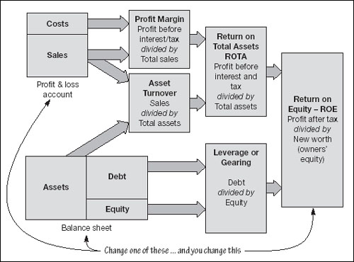

Investment indicators
Return on equity
Profit (after tax) divided by owners’ equity
Alternative measures of return (return on assets and return on capital employed) are significant for the business manager. But this one, return on equity, is critical to shareholders. It is their bottom line.
Earnings per share (EPS, net income per ordinary share)
Profit divided by number of ordinary shares
The profit attributable to each ordinary share (i.e. after tax, etc.) is one number that you cannot compare between companies directly – it depends on the number of shares issued. But the trend over time is often regarded as critical. As already discussed, for many companies steady long-term growth in earnings per share is the central objective. Calculate earning per share as net profit (including minority interests) after tax less dividends on preference shares.
|
| International accounting standards require basic (undiluted) and diluted net income per ordinary share to be stated with equal prominence on the face of the profit and loss account. Diluted EPS reflects potential reduction of EPS from options, warrants, rights, convertible debt, convertible preferred, and other contingent issuances of ordinary shares. |
Price earnings (ratio/multiple) – PE/PER
Market price of ordinary shares divided by earnings per ordinary share after tax
The price earnings ratio indicates the number of years’ earnings acquired when you buy one share. It reflects the market’s expectation of future earnings growth – and as discussed is a crucial measure of the value of a company.
Dividend cover (payout ratio when inverted)
Earnings per share divided by net dividend per share
Dividend cover indicates how many times the dividend is covered by profits. A high cover (low payout ratio) suggests that profits are being reinvested for future growth – and that there is sufficient margin to ensure that dividends will remain stable. The opposite suggests that dividends might disappear in a downturn.
Net asset value (NAV, market to book)
(Ordinary) shareholders’ equity divided by number of shares issued
Note that shareholders’ equity is equal to assets less liabilities; i.e. the net asset value. Net asset value indicates the proportion of the share price that is represented by assets (albeit at book value) – the other portion of the price therefore reflecting expectations about profits. The alternative is market capitalization to book value (how much it would cost you to buy all the company’s shares – and how much you would get back if you sold all the assets and settled all liabilities). These indicators reveal exactly what the market thinks about the value of the company’s future income stream.
Return on investment
The term return on investment (ROI) is used loosely.
Equity investors’ ROI is measured by return on equity (ROE) – since, of course, their investment is the company’s share capital.
As the business manager, the ROI that you are interested in is return on capital employed (ROCE) or return on assets (ROA).
The way that the objectives of company management and of investors hang together is illustrated in Fig. 19.1. The connection between the two sides of the diagram is self-evident. Vary one number in the profit and loss account or the balance sheet, and this must result in a change in the return on equity. However, if you follow the logic through – and remember that assets equal liabilities (debt) plus equity – you can see how the following classic relationship holds true:
Profit divided by Sales × Sales divided by Assets × Assets divided by Equity = Profit divided by Equity
Fig 19.1. How returns vary
Or, essentially:
Profit margin × Asset turnover × Leverage = ROE
Thus, increase any one of the terms on the left (profit margin, asset turnover or leverage) and you increase return on equity. Believe it or not, some companies actually manage these indicators specifically.